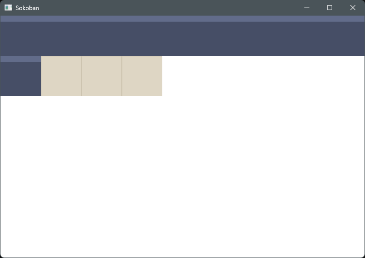
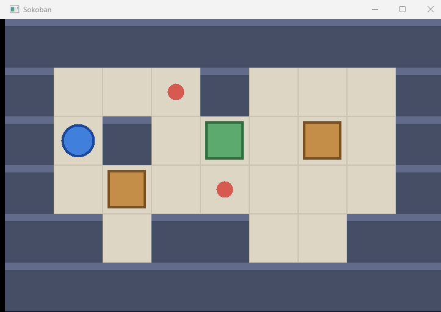

Win32로 소코반 만들기 · 9편
9편 · 더블 버퍼링과 회고
Win32 API로 소코반을 만드는 시리즈 마지막 편입니다. 부드러운 이동과 함께 생긴 화면 깜빡임을 더블 버퍼링으로 잡고, 프레임 밝기를 실제로 측정해 효과를 확인합니다. 45수 정답을 자동으로 플레이해 완성된 게임을 확인하고 아홉 편을 회고합니다.
실행 결과

영상 속 실행 장면
영상에서 직접 실행해 본 장면들입니다.
지난 편에서 잡힌 프레임

45수 정답을 자동으로 플레이

클리어

전체 코드
8편 코드에서 0줄 추가, 14줄 변경되었습니다. 표시된 줄이 이번 편에서 바뀐 부분입니다.
main.cpp · 377줄 추가변경받기
1#include <windows.h>2#include <vector>34const int TILE = 80;5const int MAP_W = 9;6const int MAP_H = 6;78const char* LEVEL[MAP_H] = {9 "#########",10 "# .# #",11 "# # . #",12 "# $ .$$ #",13 "## ##@ ##",14 "#########",15};1617const COLORREF FLOOR_COLOR = RGB(222, 214, 196);18const COLORREF FLOOR_LINE_COLOR = RGB(205, 196, 176);19const COLORREF WALL_COLOR = RGB(70, 78, 102);20const COLORREF WALL_TOP_COLOR = RGB(98, 108, 138);21const COLORREF GOAL_COLOR = RGB(214, 90, 80);22const COLORREF BOX_COLOR = RGB(196, 142, 72);23const COLORREF BOX_EDGE_COLOR = RGB(120, 80, 36);24const COLORREF BOX_OK_COLOR = RGB(92, 170, 110);25const COLORREF BOX_OK_EDGE_COLOR = RGB(48, 110, 64);26const COLORREF CLEAR_TEXT_COLOR = RGB(255, 255, 255);27const COLORREF CLEAR_BACK_COLOR = RGB(48, 142, 88);28const COLORREF PLAYER_COLOR = RGB(64, 128, 220);29const COLORREF PLAYER_EDGE_COLOR = RGB(30, 70, 150);3031char g_tile[MAP_H][MAP_W]; // '#' 벽, ' ' 바닥, '.' 목표32bool g_box[MAP_H][MAP_W];33int g_playerX = 0;34int g_playerY = 0;3536const int STEP_MS = 120; // 한 칸 이동에 걸리는 시간3738struct Slide39{40 int fromX, fromY;41 int toX, toY;42 DWORD start;43 bool active;44};4546Slide g_playerSlide;47Slide g_boxSlide;4849void LoadLevel()50{51 for (int y = 0; y < MAP_H; y++)52 {53 for (int x = 0; x < MAP_W; x++)54 {55 char c = LEVEL[y][x];56 g_tile[y][x] = (c == '#' || c == '.') ? c : ' ';57 g_box[y][x] = (c == '$');58 if (c == '@')59 {60 g_playerX = x;61 g_playerY = y;62 }63 }64 }65}6667void StartSlide(Slide& s, int fx, int fy, int tx, int ty)68{69 s.fromX = fx; s.fromY = fy;70 s.toX = tx; s.toY = ty;71 s.start = GetTickCount();72 s.active = true;73}7475RECT SlideRect(const Slide& s)76{77 DWORD past = GetTickCount() - s.start;78 float t = past >= STEP_MS ? 1.0f : (float)past / STEP_MS;79 float x = s.fromX + (s.toX - s.fromX) * t;80 float y = s.fromY + (s.toY - s.fromY) * t;81 RECT r = { (int)(x * TILE), (int)(y * TILE), 0, 0 };82 r.right = r.left + TILE;83 r.bottom = r.top + TILE;84 return r;85}8687void UpdateSlides()88{89 DWORD now = GetTickCount();90 if (g_playerSlide.active && now - g_playerSlide.start >= STEP_MS)91 g_playerSlide.active = false;92 if (g_boxSlide.active && now - g_boxSlide.start >= STEP_MS)93 g_boxSlide.active = false;94}9596void FillColor(HDC hdc, RECT r, COLORREF color)97{98 HBRUSH brush = CreateSolidBrush(color);99 FillRect(hdc, &r, brush);100 DeleteObject(brush);101}102103void FrameColor(HDC hdc, RECT r, COLORREF color)104{105 HBRUSH brush = CreateSolidBrush(color);106 FrameRect(hdc, &r, brush);107 DeleteObject(brush);108}109110void DrawShape(HDC hdc, RECT r, COLORREF fill, COLORREF edge, bool circle)111{112 HBRUSH brush = CreateSolidBrush(fill);113 HPEN pen = CreatePen(PS_SOLID, 4, edge);114 HGDIOBJ oldBrush = SelectObject(hdc, brush);115 HGDIOBJ oldPen = SelectObject(hdc, pen);116117 if (circle)118 Ellipse(hdc, r.left, r.top, r.right, r.bottom);119 else120 Rectangle(hdc, r.left, r.top, r.right, r.bottom);121122 SelectObject(hdc, oldBrush);123 SelectObject(hdc, oldPen);124 DeleteObject(brush);125 DeleteObject(pen);126}127128RECT TileRect(int x, int y)129{130 return { x * TILE, y * TILE, (x + 1) * TILE, (y + 1) * TILE };131}132133void DrawTile(HDC hdc, int x, int y)134{135 RECT r = TileRect(x, y);136 if (g_tile[y][x] == '#')137 {138 RECT top = { r.left, r.top, r.right, r.top + 12 };139 FillColor(hdc, r, WALL_COLOR);140 FillColor(hdc, top, WALL_TOP_COLOR);141 return;142 }143144 FillColor(hdc, r, FLOOR_COLOR);145 FrameColor(hdc, r, FLOOR_LINE_COLOR);146 if (g_tile[y][x] == '.')147 {148 RECT dot = r;149 InflateRect(&dot, -28, -28);150 DrawShape(hdc, dot, GOAL_COLOR, GOAL_COLOR, true);151 }152}153154void DrawBoxRect(HDC hdc, RECT box, bool onGoal)155{156 InflateRect(&box, -10, -10);157 if (onGoal)158 DrawShape(hdc, box, BOX_OK_COLOR, BOX_OK_EDGE_COLOR, false);159 else160 DrawShape(hdc, box, BOX_COLOR, BOX_EDGE_COLOR, false);161}162163void DrawBox(HDC hdc, int x, int y)164{165 DrawBoxRect(hdc, TileRect(x, y), g_tile[y][x] == '.');166}167168void DrawClear(HDC hdc)169{170 int mid = MAP_H * TILE / 2;171 RECT banner = { 0, mid - 60, MAP_W * TILE, mid + 60 };172 FillColor(hdc, banner, CLEAR_BACK_COLOR);173174 HFONT font = CreateFontW(64, 0, 0, 0, FW_BOLD, FALSE, FALSE, FALSE,175 DEFAULT_CHARSET, 0, 0, 0, 0, L"Segoe UI");176 HGDIOBJ oldFont = SelectObject(hdc, font);177 SetTextColor(hdc, CLEAR_TEXT_COLOR);178 SetBkMode(hdc, TRANSPARENT);179 DrawTextW(hdc, L"CLEAR! (R: 다시, Z: 되돌리기)", -1, &banner,180 DT_CENTER | DT_VCENTER | DT_SINGLELINE);181 SelectObject(hdc, oldFont);182 DeleteObject(font);183}184185void DrawMap(HDC hdc)186{187 for (int y = 0; y < MAP_H; y++)188 {189 for (int x = 0; x < MAP_W; x++)190 {191 DrawTile(hdc, x, y);192 bool sliding = g_boxSlide.active &&193 x == g_boxSlide.toX && y == g_boxSlide.toY;194 if (g_box[y][x] && !sliding)195 DrawBox(hdc, x, y);196 }197 }198199 if (g_boxSlide.active)200 DrawBoxRect(hdc, SlideRect(g_boxSlide), false);201}202203void DrawPlayer(HDC hdc)204{205 RECT player = g_playerSlide.active ? SlideRect(g_playerSlide)206 : TileRect(g_playerX, g_playerY);207 InflateRect(&player, -14, -14);208 DrawShape(hdc, player, PLAYER_COLOR, PLAYER_EDGE_COLOR, true);209}210211struct Move212{213 int dx;214 int dy;215 bool pushed; // 이 이동에서 상자를 밀었는가216};217218std::vector<Move> g_history;219220bool IsWall(int x, int y)221{222 return g_tile[y][x] == '#';223}224225bool IsCleared()226{227 for (int y = 0; y < MAP_H; y++)228 for (int x = 0; x < MAP_W; x++)229 if (g_box[y][x] && g_tile[y][x] != '.')230 return false;231 return true;232}233234void TryMove(int dx, int dy)235{236 if (g_playerSlide.active)237 return;238239 int nx = g_playerX + dx;240 int ny = g_playerY + dy;241 if (IsWall(nx, ny))242 return;243244 bool pushed = false;245 if (g_box[ny][nx])246 {247 int bx = nx + dx;248 int by = ny + dy;249 if (IsWall(bx, by) || g_box[by][bx])250 return;251252 g_box[ny][nx] = false;253 g_box[by][bx] = true;254 StartSlide(g_boxSlide, nx, ny, bx, by);255 pushed = true;256 }257258 StartSlide(g_playerSlide, g_playerX, g_playerY, nx, ny);259 g_playerX = nx;260 g_playerY = ny;261 g_history.push_back({ dx, dy, pushed });262}263264void Undo()265{266 if (g_history.empty())267 return;268269 Move m = g_history.back();270 g_history.pop_back();271272 if (m.pushed)273 {274 g_box[g_playerY + m.dy][g_playerX + m.dx] = false;275 g_box[g_playerY][g_playerX] = true;276 }277278 g_playerX -= m.dx;279 g_playerY -= m.dy;280}281282void PollInput()283{284 if (GetAsyncKeyState(VK_LEFT) & 0x8000) TryMove(-1, 0);285 if (GetAsyncKeyState(VK_RIGHT) & 0x8000) TryMove(1, 0);286 if (GetAsyncKeyState(VK_UP) & 0x8000) TryMove(0, -1);287 if (GetAsyncKeyState(VK_DOWN) & 0x8000) TryMove(0, 1);288}289290LRESULT CALLBACK WndProc(HWND hWnd, UINT msg, WPARAM wParam, LPARAM lParam)291{292 switch (msg)293 {294 case WM_KEYDOWN:295 switch (wParam)296 {297 case 'R': LoadLevel(); g_history.clear(); break;298 case 'Z': Undo(); break;299 case VK_ESCAPE: DestroyWindow(hWnd); return 0;300 }301 InvalidateRect(hWnd, nullptr, TRUE);302 return 0;303304 case WM_PAINT:305 {306 PAINTSTRUCT ps;307 HDC hdc = BeginPaint(hWnd, &ps);308309 HDC back = CreateCompatibleDC(hdc);310 HBITMAP bmp = CreateCompatibleBitmap(hdc, MAP_W * TILE,311 MAP_H * TILE);312 HGDIOBJ oldBmp = SelectObject(back, bmp);313314 DrawMap(back);315 DrawPlayer(back);316 if (IsCleared())317 DrawClear(back);318319 BitBlt(hdc, 0, 0, MAP_W * TILE, MAP_H * TILE, back, 0, 0, SRCCOPY);320 SelectObject(back, oldBmp);321 DeleteObject(bmp);322 DeleteDC(back);323 EndPaint(hWnd, &ps);324 return 0;325 }326327 case WM_DESTROY:328 PostQuitMessage(0);329 return 0;330 }331 return DefWindowProcW(hWnd, msg, wParam, lParam);332}333334int WINAPI wWinMain(HINSTANCE hInstance, HINSTANCE hPrevInstance,335 PWSTR pCmdLine, int nCmdShow)336{337 LoadLevel();338339 WNDCLASSEXW wc = {};340 wc.cbSize = sizeof(wc);341 wc.lpfnWndProc = WndProc;342 wc.hInstance = hInstance;343 wc.hCursor = LoadCursorW(nullptr, IDC_ARROW);344 wc.hbrBackground = (HBRUSH)(COLOR_WINDOW + 1);345 wc.lpszClassName = L"SokobanWindow";346 RegisterClassExW(&wc);347348 RECT rc = { 0, 0, MAP_W * TILE, MAP_H * TILE };349 AdjustWindowRect(&rc, WS_OVERLAPPEDWINDOW, FALSE);350 int width = rc.right - rc.left;351 int height = rc.bottom - rc.top;352353 HWND hWnd = CreateWindowExW(0, L"SokobanWindow", L"Sokoban",354 WS_OVERLAPPEDWINDOW,355 CW_USEDEFAULT, CW_USEDEFAULT, width, height,356 nullptr, nullptr, hInstance, nullptr);357 ShowWindow(hWnd, nCmdShow);358 UpdateWindow(hWnd);359360 MSG msg = {};361 while (msg.message != WM_QUIT)362 {363 if (PeekMessageW(&msg, nullptr, 0, 0, PM_REMOVE))364 {365 TranslateMessage(&msg);366 DispatchMessageW(&msg);367 continue;368 }369370 PollInput();371 UpdateSlides();372 InvalidateRect(hWnd, nullptr, FALSE);373 UpdateWindow(hWnd);374 Sleep(1);375 }376 return (int)msg.wParam;377}
빌드 방법
Visual Studio
- 새 프로젝트 → Windows 데스크톱 애플리케이션 또는 빈 프로젝트
- 생성된 소스를 지우고 이 페이지의
main.cpp를 추가 - 빈 프로젝트라면 속성 → 링커 → 시스템 → 하위 시스템을 창(/SUBSYSTEM:WINDOWS) 으로
- Ctrl+F5 로 실행
명령줄 (x64 Native Tools Command Prompt)
cl /EHsc /std:c++20 /utf-8 /DUNICODE /D_UNICODE main.cpp /link /SUBSYSTEM:WINDOWS user32.lib gdi32.lib
코드는 흐름을 보여 주려고 에러 처리를 생략했습니다. 실제 프로그램에서는 RegisterClassExW·CreateWindowExW 의 반환값을 확인하세요.